Hi there!
This page represents a collection of my many projects, however, it is very much a work in progress and more details for everything will be added at somepoint in the future!
If you have any questions about any of these projects, feel free to reach out to me at scheidlercai@gmail.com!
Enjoy!
Donut of Doom
During the summer before I went to university, I became very excited about combat robotics. Accordingly, I set out to create my own basic wedge bot -- a bot that would have no active weapon but I would at least be able to drive around.
That led me to this:
Upon finally arriving at university, I teamed up with a fellow EECS freshman and a MechE graduate to make Donut of Doom, a 1lb PLANT combat robot.
Here's some media of Donut of Doom V1:


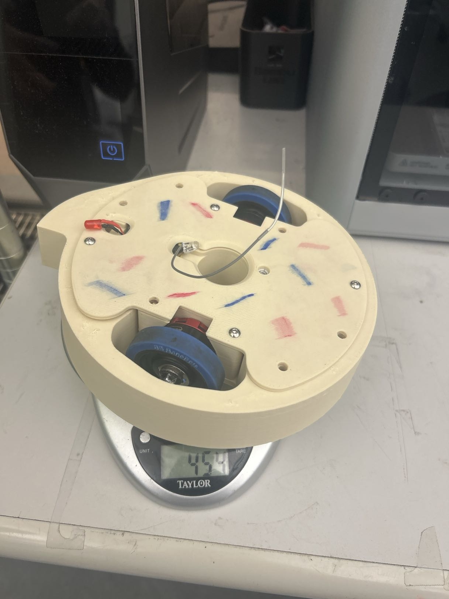
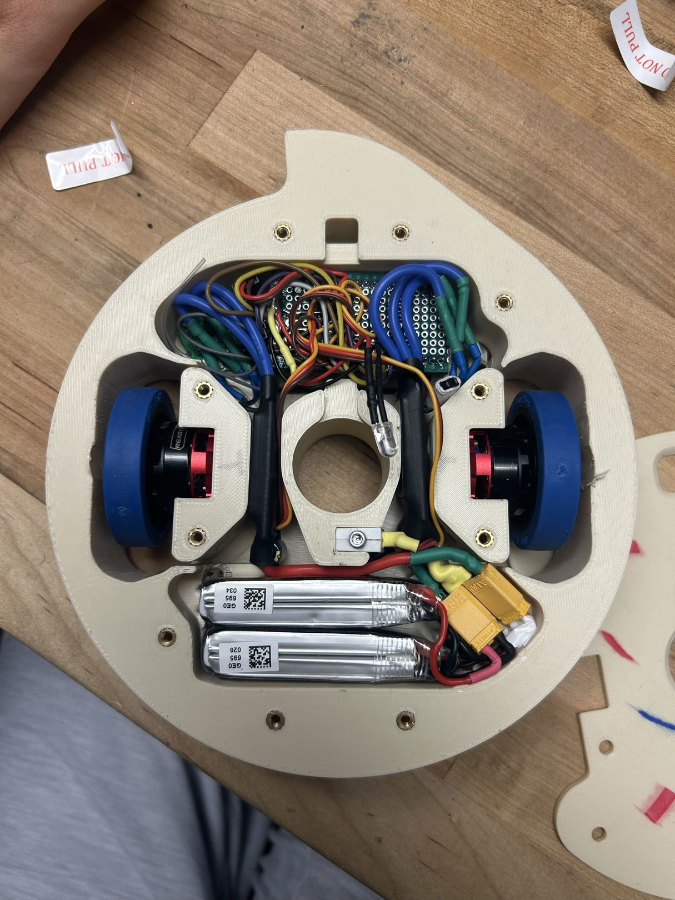
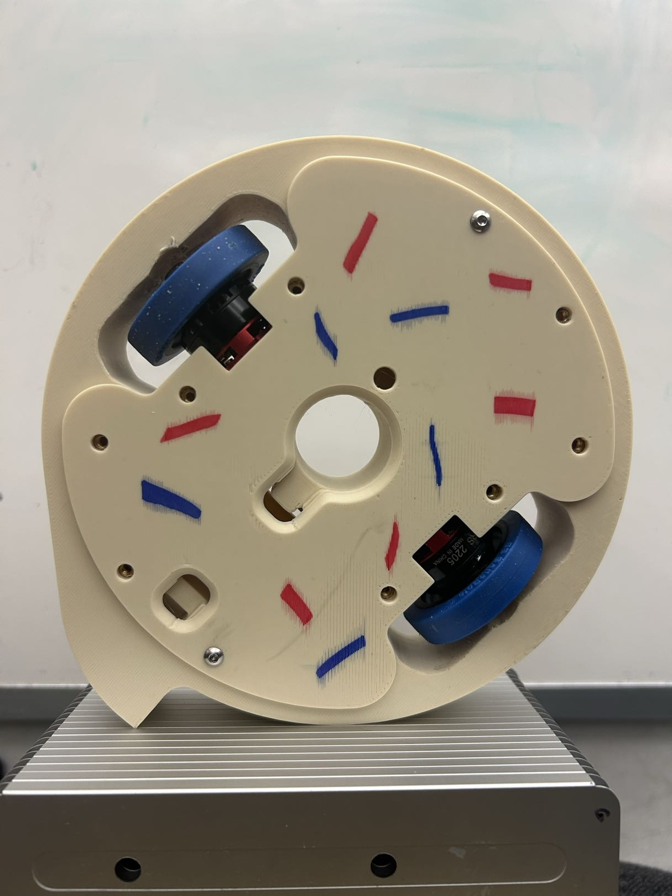
Here's some media of Donut of Doom V2:
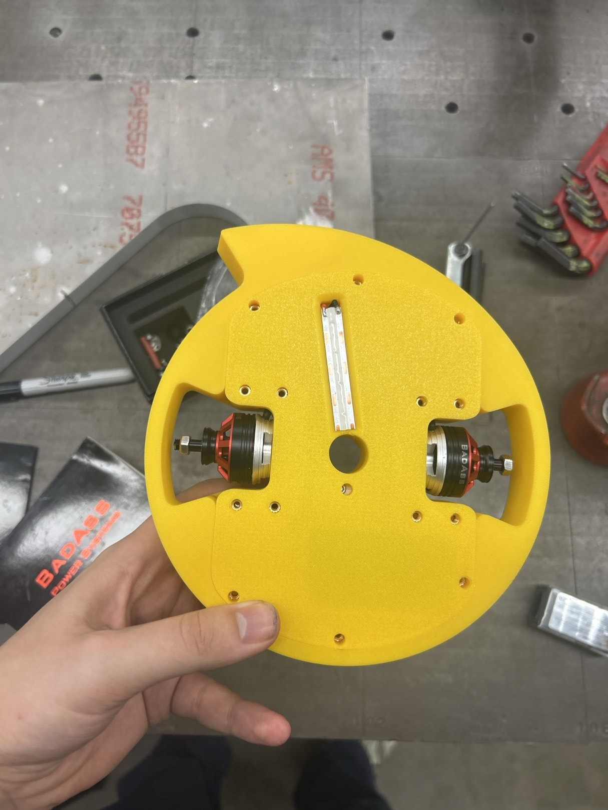


Donut of Doom V3 is a work in progress, here's what we have so far:
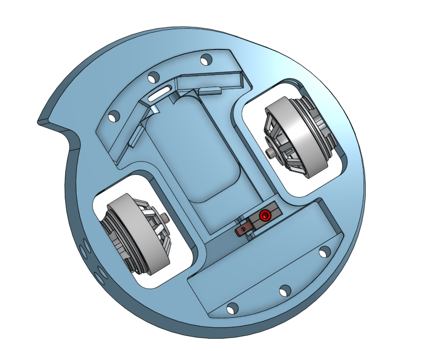
At one of the largest hackathons in the world, CalHacks 12.0, my team managed to win Best Beginner Hack with our project, Physical Digital Darts.
Our team wanted to integrate hardware with 3D design with software, as a result we decided on creating a dart-shaped controller which could measure its orientation with an onboard imu, relay that data to a laptop, and communicate with a custom Python-script which would use the angle of the physical controller to launch a digital dart within a pygame simulation!
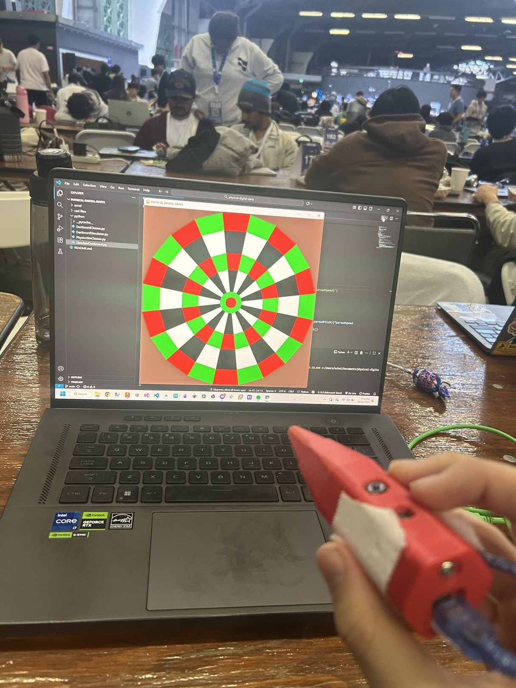

A Telescoping Phone Holder
After hearing about The CAD Challenge, a CAD competition hosted by some UC Berkeley students, I teamed up with some friends to create this telescoping phone holder! The main goal of this project was to offer a modular and 3D printable alternative to putting your phone in some precarious position to record a shot for your engineering video. Fortunately, because of the nature of the design, it has many applications outside of what we designed it for! This project won both the Best Overall CAD Design and The Mittens Award, giving it a clean sweep of all awards at the competition.
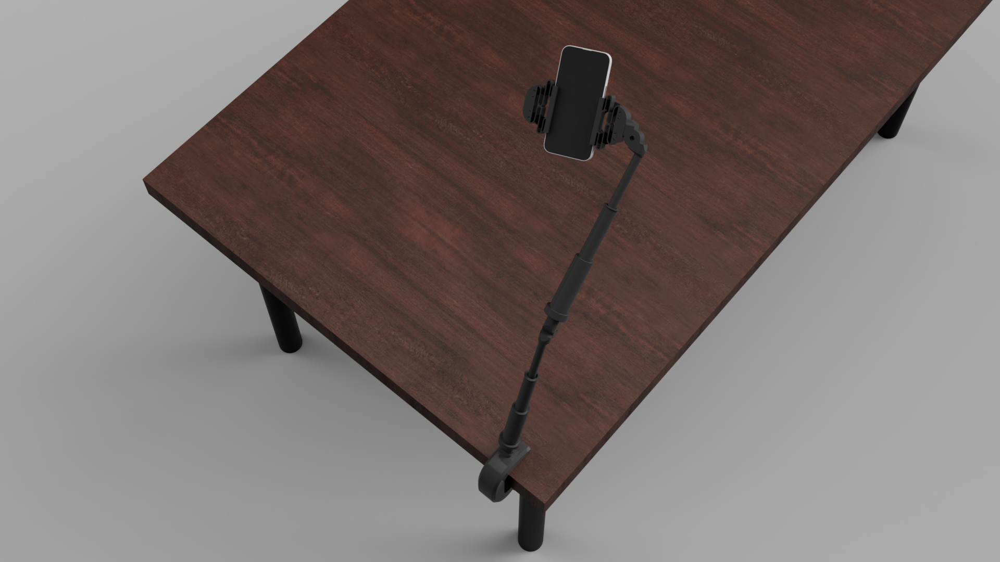


DoodleDogs won the Congressional App Challenge for CA31. During this project, I was a C# engineer and scrum master for a team of 6 and rewrote most of the game's code in its final stages to get the game across the finish line. DoodleDogs is a 2D, story-driven, iOS mobile game using Unity which achieved 200+ downloads.
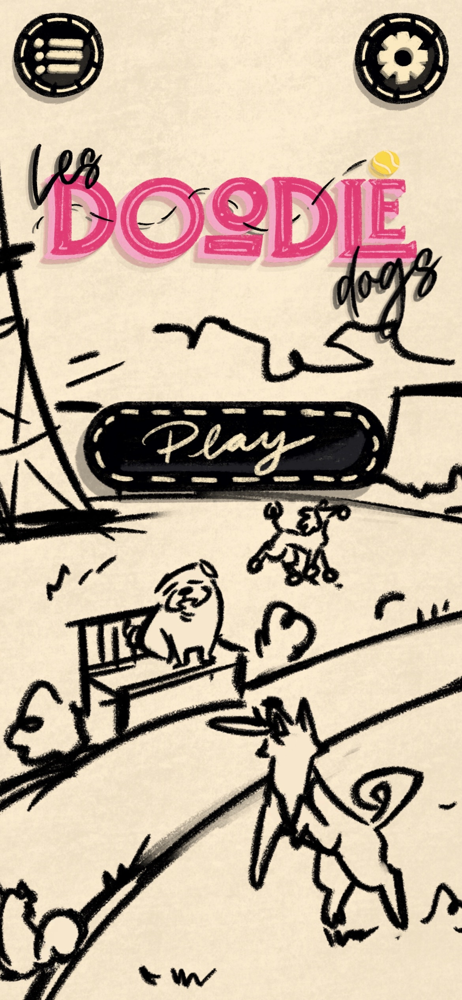


Somnï
Somnï is a 2D/3D isometric, narrative-driven iOS mobile puzzle game made using Unity which I made as a part of a team of 8 which follows the main character’s battles inside and outside of her dreams. I was a lead engineer and producer for this game which meant I held scrums for the engineering department and directed the overall vision of the game. I also wrote most of the code for this game in its final stages to push it over the finish line. Somnï achieved 350+ downloads on the iOS app store.


FTC Team 4625, the Kings and Queens
I participated in the FIRST Tech Challenge (FTC) for 5 years, 3 of which I was team captain of my highschool team. Here are some moments from my FTC career:


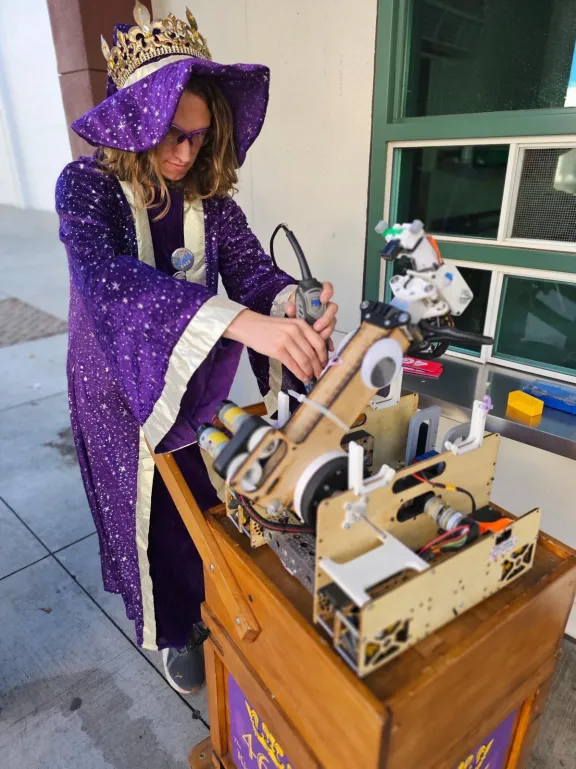


Integrordle
I gamified the learning of calculus by developing an Integral-based parody of the New York Times’ Wordle using HTML/CSS, Bootstrap, and Thymeleaf for the frontend and Java (Spring Boot) for the backend.

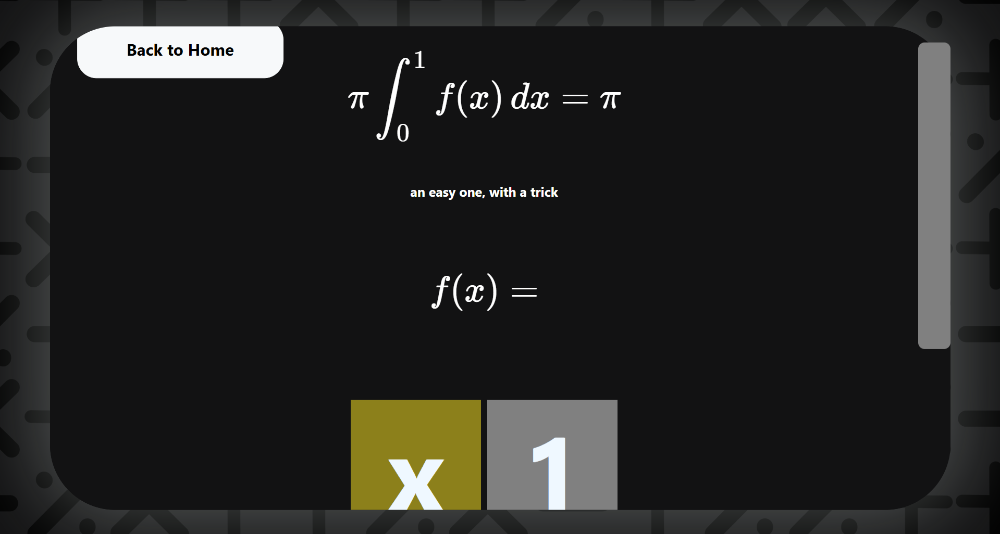
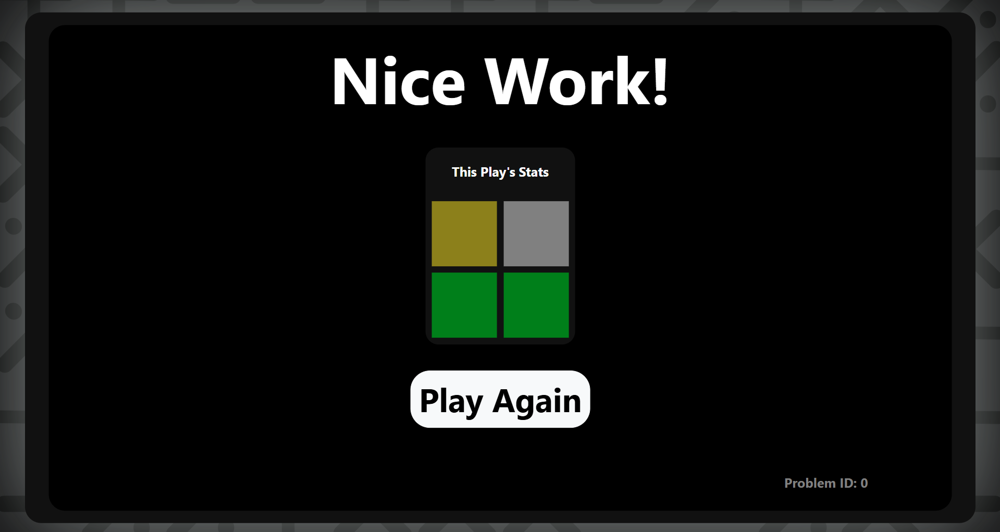
ArmControlledTurret
I created a turret using servos and an arduino which could track a person's arm and move accordingly.
Models Galore!
I have created many a random model over the years, some of which include: cookie cutters, kitchen oven knobs, multiple different types of headphone hangers for classrooms of my school, and massive keyswitches which could be pressed to type letters!


STEM Parodies
I have made a whole lot of STEM parody songs over the years. Here they are!
And more to come!
Stay tuned...